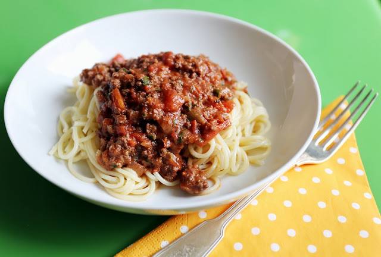

Bjorn's Bolognese

Description
This rich and hearty meat sauce has lots of hidden veg and plenty of protein for
your little Bjorns and Bjorks. They'll love it!
Ingredients
- 1 tbsp olive oil
- 5-6 slices of smoked bacon
- 2 medium onions
- 2 cloves of garlic
- 3 carrots
- 3 celery stalks
- 2 heaped tsp dried oregano
- salt and pepper to taste
- small bunch of fresh basil
- 500g lean ground beef
- 500g ground port
- 28 oz can of San Marzano tomatoes
- 4 oz parmesan cheese, grated
- 4 oz tomato paste
- splash of balsamic
Instructions
- peel and finely chop onions, carrots, and celery stalks. Mince garlic,
and grate parmesan cheese. Pick basil leaves.
- Slice bacon.
- In a large pot on medium high heat, add olive oil, bacon, and oregano.
Saute 2 minutes.
- Add onion. Continue to cook,stirring occasionally until onion begins to turn
translucent and bacon is lightly golden (about 5 minutes.)
- Add ground meat, carrots, and celery. Break up meat as you stir, cooking for
an additional 5-7 minutes or until vegetables soften slightly.
- Toss in San Marzano tomatoes, tomato paste, and a healthy pinch of salt and
pepper. Once sauce starts to boil, reduce temperature and cook covered at a low simmer
for 1 hour. Remove lid and continue to simmer for an additional 30 minutes. Add a splash of water if
sauce appears too thick.
- Remove from heat. Add half the parmesan, a splash of balsamic, and stir in the basil.
Have a taste and adjust salt and pepper as required.
- ladle sauce on your clan's favorite noodle, and top with remainder of Parmesan.